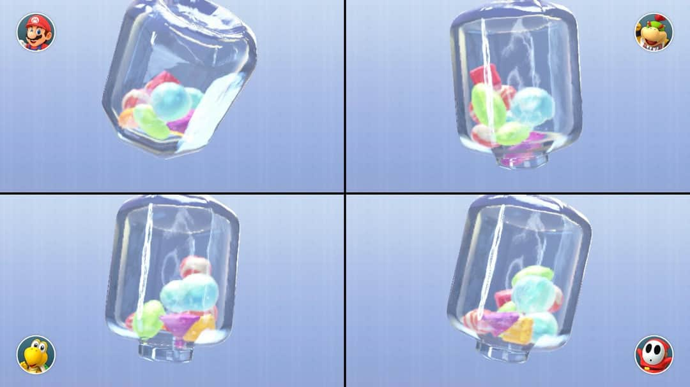

Mario Party: Destroyer of Friendships and Explainer of Convolutional Neural Networks
This is The Blog of a Mario Party Master
In pre-COVID times, my friends and I would gather around for a fun activity called “lets ruin our friendship by taking Mario party way too seriously”. The night always starts with laughter and few drinks, and ends with me standing on a chair, pointing at my closest friends, and screaming “I’m going to make you cry tears you thought were reserved for the death of your mother”. Once the moment has passed it seems a little dramatic, but at the time, we all truly believe that the speed you can get virtual candy out of a jar is an appropriate measure of human worth.

There are several games that cause spite, but one called “Absent Minded”, pictured below, always sends us into an argument. Basically, you have 3 characters, and a slowly appearing image, and you have to find out which character is absent as the pictures become clearer. The faster you correctly identify, the more points you receive. I have never lost the game. Additionally there are 3 levels of this mini game, and so 3 different ways the images are shown to you: Jumbled Pictures, Blurred Pictures, and One At a Time.
Now, obviously the levels are meant for humans to play, and not for teaching machine learning, but the challenge each level presents gives us an interesting way to view the concepts. The jumbled picture level can show us how our typical machine learning algorithm will view an image. The blurred picture level shows the benefit of using convolutional neural networks, and the one at a time level can go in the trash! Sorry, not every analogy will fit perfectly into a machine learning theory.

How Does The Picture Look to a Computer
Before I jump into explaining the concepts, I want to explain how your computer will “see” your image. Statistical models do not have eyes, and so for any picture we want to use, an observation needs to be converted in to a dataset. The process is illustrated below (although the variable size would be each pixel, and not limited by how small I can make my handwriting).

First our image is broken up into its individual pixels. For greyscale they are typically given a single number to represent its “darkness”, and colour images are given three different values for red, green, and blue (RGB). This dataset is what will be used to represent your model (although I will use the image rather than the dataset for visualisations).
Part One: The Jumbled Picture Level
Theory: What’s Wrong With What We Already Have
Technically, we could use any other machine learning algorithm to classify an image. We can call these “bag of pixel” methods as they don’t consider the pixels location in the image. They essentially cut the image up into pixels, shake them up in a bag, toss them out, and classify based off these values. Ultimately, the problem with any “bag of pixel” model, is that it fails to capture the shape of the image independent of its location. This means only images that have the right features in the right area are correctly classified.
Analogy: What Makes the Jumbled Level Hard

The jumbled picture stage is interesting, because we cannot look at the characters as a whole to identify who is present. Since We cannot identify the pictures using the overall shape of the character, we need to look for the presence of independent key features. This reliance on identifiable features in the correct location is also what identifies our ordinary algorithms.
Putting Them Together
In reality, this jumbling in our pictures would be at a pixel level, not big chunks, but the minigame is more of a point of illustration rather than a technical tool to understand machine learning. Key features being in the right place can be used successfully to identify images, but ultimately we have “zoomed in” too far to see the relationship between pixels. We can conceptualise this further with an example.
If we are trying to identify Mario, cap-looking pixels where Mario’s cap should be make it easy. If we have a picture where Mario doesn’t have his cap, that makes it hard. If we have a single picture where Mario is laying down so his cap is where his feet should be, that makes it even worse.
This is essentially the problem with our regular Machine learning algorithms. Key features in the right place make classification easy. No key features makes classification hard. Key features in uncommon places will be incorrectly assumed to be something else, and cause misclassification. This is where the benefits of using a convolutional neural network come in.
Part 2: The Blurry Image Level
Theory: How does a Convolutional Neural Network Work?
Before we return to explaining machine learning concepts in terms of Mario Party, lets take a step back, and look at how convolutional neural networks work in general. The illustration below is an overview of the structure of a CNN. The information contained in the image undergoes several transformations using layers that can be classified as either “feature extraction”, or “classification”.
Feature Extraction Layers
Feature extraction is what really sets the CNN apart from other models. These layers make new variables that are more “computer vision friendly”. The process creates nodes that identify certain aspects of an image, such as Yoshi’s Shell or Peach’s hair, and converts them to variables we can use to make predictions. The most common (and technically interesting) layers used in the process are explained below. The “options” are specifically related to building CNN in the R package, Keras.
Convolutional Layers

The convolutional layer is what makes a neural network, a convolutional neural network. This layer creates a small window (called a kernel), that travels along the image and looks for a specific feature. The kernel_size option selects the size of the grid that is run along the image. Larger grids can overlook important details, while smaller grids can provide too much information and create noise. Typically the standard is somewhere in the range of a (3x3) grid. This information is taken from image to feature map using a filter. The filter is basically the type of feature we are looking for, when we run the kernel over the image. The number of times we do this, each with a unique filter, is the “depth” of the layer. In Keras, that is given by the filter option. As for which filters it uses, that is trained by the model.
The only convolutional layer that takes information from the image is the first one. All the following feature maps are computed on the previous feature maps. The new filter is applied to some combination of the previous layers feature maps and thus more convolutional layers mean variables that represent more intricate features.
Max Pooling
How does it work?
Just like the original image, feature maps can be seen as a grid of pixels. Max pooling sections each feature map into smaller non-overlapping grids, takes the largest value of those pixels, and moves it on to the next layer. The example illustration above is looking for the darkest pixel on a 2x2 grid. Grid size is important, we want to minimise the bias introduced into the model by keeping the grid small, but also eliminate noise and not make the grid so small the layer does nothing.
Why the Maximum?
Max pooling is a rather counter-intuitive layer, statistically speaking. Through practice, it seems that the maximum is the measure that minimises this information loss, rather than measures of central tendency as we would expect. As to why, the best analogy I’ve seen for the max pooling stage is from the data sceptic podcast. If you are looking for your keys, and everyone in the group says they don’t have them but one person, you aren’t going to take the median or average value. We are not looking for how much the picture looks like Mario’s cap on average, we are looking for any sign of Mario’s cap.
Classification Layers
Dense
A dense layer allows takes the nodes from the previous convolutional layers, and make a fully connected layer. This essentially takes our feature maps as inputs and runs them through a typically neural network, which we won’t go into detail about here. Our final classification layer is also a dense layer, that outputs the probabilities of each classification option. This is the final output of the model.
Dropout Layers
Unlike the previous layers, dropout layers can be placed among the feature extraction or classification layers. In fully connected neural networks its use is quite simple; it samples random nodes to remove from the layer, which prevents overfitting. This interpretation does not follow for dropout layers placed among the feature extraction layers (the reason is matrix multiplication but its not worth going into) however it still helps prevent overfitting. Sometimes the number of pooling layers is limited by the resolution of the image (we can only max pool it to be so small) so if we need an additional measure against overfitting, we can include dropout layers.
Analogy: The Blurry Image Level

Circling back to Mario Party, the blurry levels difficulties are different to the jumbled level. Here, we struggle to make out key features, but must use the overall shape and colour to identify the character. As the image becomes clearer, it becomes easier to see, and we are more certain of our answer, however this additional certainty does not come without cost. The longer you wait to select an answer in the minigame, the more likely it is that you lose. This ultimately means that if the differences between characters are too subtle, the amount of time it will take to identify the difference isn’t worth the cost, and we are better off guessing.
Putting It Together
Waiting for certainty in the minigame is similar to overfitting in our convolutional neural networks. The deeper we go, the more likely it is that we overfit, and the more computationally heavy it is. We can add in dropout layers, but eventually there is an upper limit on the certainty we can have in our prediction. Unlike the normal models however, CNNs can capture shape AND the key features, they just need to be deep enough.
Mario Party and Convolutional Neural Networks: A Neat Analogy or Desperate Stretch to Make Statistics Seem Fun?
Obviously the CNNs have more nuance to them than can be explained using a Mario Party minigame, but it doesn’t do a bad job of giving us a conceptual understanding. Normal algorithms are limited by their inability to identify characters independent of their location, an issue we can circumvent using CNNs. CNNs capture the shape and general features of a character. Although really the most important learning experience from this post should be that if you come to my house to play Mario Party you might end up dead in a ditch somewhere.

This work is licensed under a Creative Commons Attribution-NonCommercial-ShareAlike 4.0 International License.